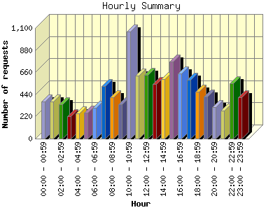
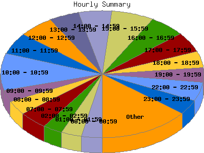

Report generated by Analog 6.0 and Report Magic 2.21
|
Web Server Statistics for "Harish Narayanan (hnarayan) - January 2007" Report generated by Analog 6.0 and Report Magic 2.21 |
The Hourly Summary identifies the level of activity broken down by each hour. Remember that one page hit can result in several server requests as the images for each page are loaded. This summary also compares the level of activity during working hours and after hours as a total for the report time frame.


| Hour | Number of requests | Number of bytes transferred | Percentage of the bytes | Percentage of the requests | |
|---|---|---|---|---|---|
| 1. | 00:00 - 00:59 | 368 | 43.746 MB | 2.67% | 3.26% |
| 2. | 01:00 - 01:59 | 370 | 56.176 MB | 3.43% | 3.28% |
| 3. | 02:00 - 02:59 | 344 | 118.206 MB | 7.21% | 3.05% |
| 4. | 03:00 - 03:59 | 220 | 38.570 MB | 2.35% | 1.95% |
| 5. | 04:00 - 04:59 | 249 | 56.008 MB | 3.42% | 2.21% |
| 6. | 05:00 - 05:59 | 256 | 49.366 MB | 3.01% | 2.27% |
| 7. | 06:00 - 06:59 | 309 | 50.766 MB | 3.10% | 2.74% |
| 8. | 07:00 - 07:59 | 522 | 56.628 MB | 3.45% | 4.63% |
| 9. | 08:00 - 08:59 | 411 | 70.084 MB | 4.28% | 3.64% |
| 10. | 09:00 - 09:59 | 340 | 78.529 MB | 4.79% | 3.01% |
| 11. | 10:00 - 10:59 | 1,062 | 96.089 MB | 5.86% | 9.41% |
| 12. | 11:00 - 11:59 | 630 | 54.078 MB | 3.30% | 5.58% |
| 13. | 12:00 - 12:59 | 632 | 61.239 MB | 3.73% | 5.60% |
| 14. | 13:00 - 13:59 | 546 | 35.688 MB | 2.18% | 4.84% |
| 15. | 14:00 - 14:59 | 594 | 64.817 MB | 3.95% | 5.26% |
| 16. | 15:00 - 15:59 | 767 | 97.607 MB | 5.95% | 6.80% |
| 17. | 16:00 - 16:59 | 647 | 94.222 MB | 5.75% | 5.73% |
| 18. | 17:00 - 17:59 | 582 | 105.245 MB | 6.42% | 5.16% |
| 19. | 18:00 - 18:59 | 464 | 76.595 MB | 4.67% | 4.11% |
| 20. | 19:00 - 19:59 | 418 | 100.996 MB | 6.16% | 3.70% |
| 21. | 20:00 - 20:59 | 314 | 44.828 MB | 2.73% | 2.78% |
| 22. | 21:00 - 21:59 | 276 | 56.598 MB | 3.45% | 2.45% |
| 23. | 22:00 - 22:59 | 552 | 69.954 MB | 4.27% | 4.89% |
| 24. | 23:00 - 23:59 | 411 | 63.432 MB | 3.87% | 3.64% |
| Work Hours (8:00am-4:59pm) | 5,629 | 652.354 MB | 39.79% | 49.88% | |
| After Hours (5:00pm-7:59am) | 5,655 | 987.114 MB | 60.21% | 50.12% | |
This report was generated on February 4, 2007 20:31.
Report time frame January 1, 2007 00:02 to January 31, 2007 23:51.
| Web statistics report produced by: | |
 Analog 6.0 Analog 6.0 |  Report Magic 2.21 Report Magic 2.21 |